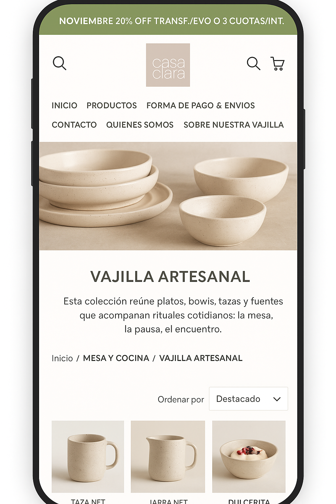
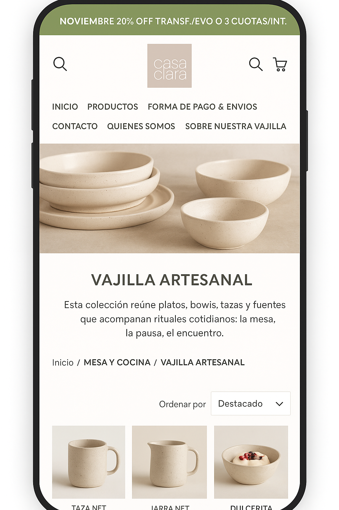

Plataforma de Cursos Online
Educación digital, gestión de contenido y seguimiento de estudiantes
Primer contacto
Una institución educativa nos contactó para profesionalizar su oferta de cursos online, que hasta ese momento se dictaban de forma desordenada en distintas plataformas.
Problemática
El principal desafío era centralizar la gestión de cursos, estudiantes y contenido en una plataforma única, intuitiva y que permitiera seguimiento en tiempo real del progreso de cada alumno.
Solución
Desarrollamos una plataforma LMS (Learning Management System) personalizada que integra gestión de cursos, videotecas, evaluaciones interactivas y dashboards de progreso. Incluye capacitación para que los docentes puedan gestionar el contenido de forma independiente.
- Plataforma LMS con interfaz intuitiva
- Gestión de estudiantes y evaluaciones
- Sistema de notificaciones y seguimiento
- Capacitación para docentes
Resultado
La institución amplió su alcance a 500+ estudiantes en el primer año y mejoró la retención de alumnos gracias a una mejor experiencia educativa.
Imágenes del proyecto
 
